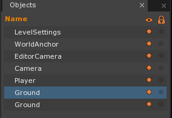
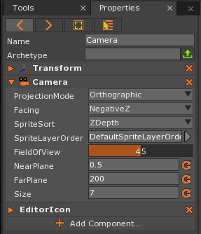
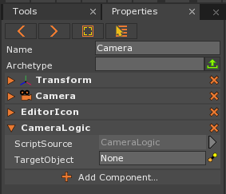

Following Camera
This lesson covers creating a camera, setting it as the in-game camera, basic camera movement, camera logic, and smooth camera movement.
Create a New Project
Level Setup
Here is how our level should look after we do our initial level setup:
{kind=link}
Our initial level setup includes a ground, 2 walls, and the player object.
Player Object
- Command :
CreateSpriteor - In Properties Window
- Set Name to: Player
- Under Sprite
- Set Color to: Orange [R: 255, G: 128, B: 0, A: 1.00]
Ground Objects
Command :
CreateSpriteorIn Properties Window
- Set Name to: Ground
- Under Transform
- Set Translation to: [-10, -1, 0]
- Set Scale to: [20, 1, 1]
Paste a copy of the Ground object and select it
In Properties Window
Under Transform
- Set Translation to: [10, -1, 0]
Here is our objects in the Objects Window:

Camera Component
Since our camera is 2D, we will cover the 2D aspects of the camera. If you select the Camera object, you will see that a preview of what the camera can “see” is displayed in the Level Window:
{kind=link}
Anything outside of the rectangle will not be seen by the camera when we run the game.
The Camera component uses the position and rotation of the Transform component. The size of this rectangle can be set with the Camera component’s Size property.
- Select the Camera object
- In the Properties Window
- Under Camera
- Set ProjectionMode to: Orthographic
- Set Size to: 1
- Under Camera
{kind=link}
Notice how the length and width of the camera’s viewing area is now 1 unit, which is why only the Player object (which has a width and height of 1) is visible.
In the Properties Window
- Under Camera
- Set Size to: 7

- Under Camera
{kind=link}
For the purpose of this snippet, we’ll keep these camera settings.
Camera Movement
Now that we have a camera setup, let’s start on some camera logic. First, we will make the camera move. Moving a camera is just like moving any other game object.
- Add a new ZilchScript resource named: ‘CameraMovement’
- Change the CameraMovement script to the following code:
class CameraMovement : ZilchComponent
{
function Initialize(init : CogInitializer)
{
// we want to update our camera's position each game loop
Zero.Connect(this.Space, Events.LogicUpdate, this.OnLogicUpdate);
}
function OnLogicUpdate(event : UpdateEvent)
{
// check if we pressed on the left key
if(Zero.Keyboard.KeyIsDown(Keys.Left))
{
// create a new temporary variable to hold our camera's position
var cameraPos = this.Owner.Transform.LocalTranslation;
// update the position one unit
cameraPos.X -= 1.0;
// set the camera's transform to our new position
this.Owner.Transform.LocalTranslation = cameraPos;
}
// check if we pressed on the right key
if(Zero.Keyboard.KeyIsDown(Keys.Right))
{
// create a new temporary variable to hold our camera's position
var cameraPos = this.Owner.Transform.LocalTranslation;
// update the position one unit
cameraPos.X += 1.0;
// set the camera's transform to our new position
this.Owner.Transform.LocalTranslation = cameraPos;
}
}
}
Now the camera can be moved in game by pressing the Left and Right arrow keys.
Camera Logic
Now we will make the camera follow the Player object.
- Stop the Game
- Select the Camera object
- In the Properties Window
- Click the X along side the CameraMovement script to remove it from the Camera object
- Close the CameraMovement script by clicking the X on the CameraMovement tab (if it is open)
Renaming ZilchScripts
Now we will make the Player object move. We can use the script that we just removed from the Camera object, but its current name is not accurate anymore. We can simply rename the script with these simple steps:
In the Library Window
Under the ZilchScript tab
Right-Clickon the CameraMovement ZilchScript- Select Rename
- Set the Name to: Movement
Open the Movement ZilchScript
- Rename the CameraMovement class to: Movement
class Movement : ZilchComponent {
Moving the Player Object
- Select the Player object
- Add the Movement script to the Player object
- Save the project and run the game
We now have basic movement for the Player object by pressing the Left and Right arrow keys, but if we move too far, we are unable to see the Player object.
Making the Camera Follow the Player Object
- Stop the Game
- Add a new ZilchScript resource named: ‘CameraLogic’
- Select the Camera object
- In the Properties Window
We will start by simply having the CameraLogic script set the Camera’s translation along the x-axis to be the same as the Player object’s translation along the x-axis (without changing the camera’s translation along the y or z-axis.)
There’s one little problem: we don’t have access to the Player object’s Transform component from inside the CameraLogic script as it is attached to the Camera object.
Using A CogPath Property
We will use a CogPath Property to solve this problem. Cog is the name used to refer to game objects. If read from right to left, the name Cog is an acronym for Game Object Composition. This is because our game objects are simply a composition of components and/or child game objects.
- Change the CameraLogic script to the following code:
class CameraLogic : ZilchComponent
{
[Property]
var TargetObject : CogPath = null;
function Initialize(init : CogInitializer)
{
Zero.Connect(this.Space, Events.LogicUpdate, this.OnLogicUpdate);
}
function OnLogicUpdate(event : UpdateEvent)
{
}
}
Line 4 shows how to create a CogPath Property. Notice that this is not inside of a method. The Property is defined directly inside of the CameraLogic class. Just like the functions defined directly in the class and the Properties we made in the Properties lesson, we must use this to access it, i.e. this.TargetObject.
If our code is error free, then the TargetObject property should show up under the CameraLogic script component in the Properties Window:

- Select the Camera object
- In the Properties Window
- Under CameraLogic
- Set TargetObject to: :/Player
- Under CameraLogic
- Save the project
Now that we have a TargetObject, we can access its information.
- Change the CameraLogic script’s OnLogicUpdate to the following code:
function OnLogicUpdate(event : UpdateEvent)
{
// create a new variable to hold the player's position
var newCameraPos = this.TargetObject.Cog.Transform.LocalTranslation;
// save the camera's z value
newCameraPos.Z = this.Owner.Transform.LocalTranslation.Z;
// set the camera's new position to newCameraPos
this.Owner.Transform.LocalTranslation = newCameraPos;
}
Using the TargetObject Property, we accessed the target object’s translation to obtain the x and y components to help update our Camera’s position.
Now when we move the Player object using the Left and Right arrow keys, the camera follows the Player object.
| orphan: |
|---|